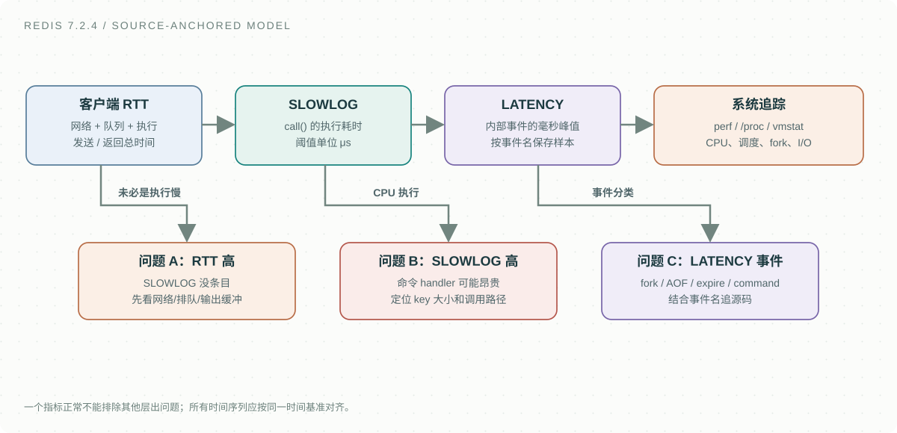
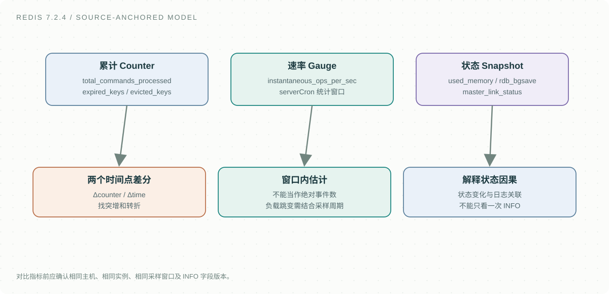
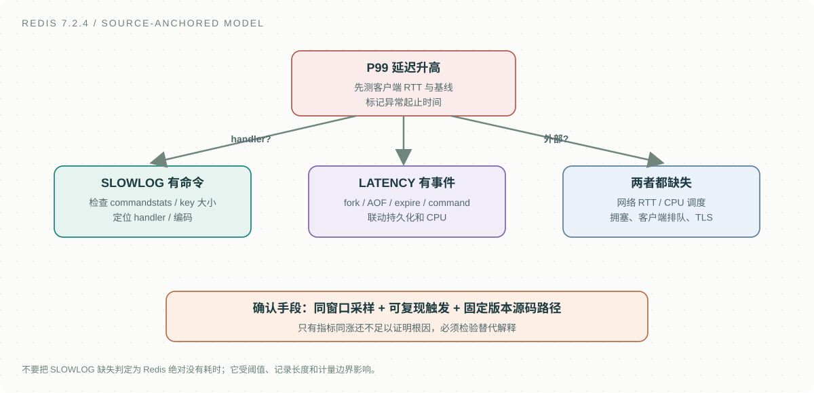

Chapter 23 / Redis 7.2.4 Source Anatomy
性能诊断工具链：INFO、SLOWLOG、LATENCY 与系统追踪
从客户端 P99 到 Redis 命令执行、INFO 计数器、LATENCY 内部事件和 perf/strace，建立能够区分网络、CPU、fork、AOF 与热 key 的证据链。
P99 变慢的第一原则：先区分客户感知与 Redis 执行时间
一次客户端 GET 的端到端 RTT 可能包含排队等待、网络往返、TLS 计算、Redis 命令执行、回复缓冲的拥塞和客户端自身的调度延迟。即使 Redis handler 只耗时几十微秒，客户端依然可能在网络抖动或输出缓冲拥塞时看到数十毫秒。反过来，某个 O(N) 命令执行很慢，也可能因为大多数请求很快而未显著影响均值。
因此应以延迟分位数和对应时间窗口开始：记录 P50/P95/P99、请求类别、实例节点、客户端/服务端时间戳和故障开始结束时刻，再沿“命令执行 → Redis 内部事件 → 操作系统 → 网络”依次缩小假设。不要把单次 PING RTT 当作全业务 SQL/Redis 链路性能结论。

INFO 指标：先辨别 Counter、Gauge 与窗口速率
Redis 7.2.4 的 server.c 由 genRedisInfoString() 生成分节 INFO 文本。total_commands_processed、expired_keys、evicted_keys 是从进程启动累计的计数器；需要对相同实例的两个时间点做差再除以时长，才能讨论“每秒速率”。instantaneous_ops_per_sec 则由 serverCron() 调用 trackInstantaneousMetric() 定期采样，是短窗口估计而非从启动以来的精确平均。

INFO clients 关注 connected_clients、blocked_clients、输出缓冲；INFO memory 关注 used_memory、RSS、allocator 与 mem_not_counted_for_evict；INFO persistence 关注 RDB/AOF 子进程、COW 与 fsync 相关指标；INFO replication 关注角色、复制 offset 和 link 状态；INFO stats 关注命令速率、网络字节、淘汰、过期和错误。它们应该在同一时间窗口联合分析。
| 观测值 | 量纲/语义 | 错误用法 |
|---|---|---|
| total_commands_processed | 累计条数 | 把单次值当成每秒 QPS |
| instantaneous_ops_per_sec | 定期采样的近似速率 | 认为它必须等于两次 Counter 差分 |
| used_memory_rss | 进程物理驻留内存字节数 | 认为 RSS 与 maxmemory 必须相等 |
| rdb_bgsave_in_progress | 当下是否有 RDB child | 看见 0 就认定最近没发生 fork |
| master_repl_offset | 复制字节位置 | 把 offset 差当成落后命令条数 |
SLOWLOG 是 handler 执行耗时，不包括网络传输
slowlog.c 的 slowlogPushEntryIfNeeded() 只在执行耗时达到 slowlog-log-slower-than 阈值时记录事件；阈值单位是微秒。slowlog-max-len 控制最多保留多少条；条目包含时间戳、duration、命令参数（可能截断）、客户端地址和名称。源码在执行包装 call() 的统计逻辑中调用慢日志，而不是网络写回完成后才计算时间。
因此慢日志不会包括响应在网络上传输所花的时间。慢日志为空可能说明命令耗时低于阈值、历史已被覆盖、慢日志关闭或查询的是错误实例；不能推断整个请求 RTT 必然正常。为了保护隐私，排障导出前还要检查命令参数是否可能包含业务敏感值。
redis-cli -p 6390 CONFIG GET slowlog-log-slower-than
redis-cli -p 6390 CONFIG GET slowlog-max-len
redis-cli -p 6390 SLOWLOG LEN
redis-cli -p 6390 SLOWLOG GET 10如果有慢条目，按命令类别分析复杂度：HGETALL、LRANGE 0 -1、SMEMBERS 等返回集合大小随成员数增长；KEYS * 可扫描整个数据库。大 key、编码转换、模块或脚本均可能解释同类慢请求，但仍需补充 key 数据规模和 stack 才能证实。
LATENCY monitor：按内部事件采样，不是每个请求的 P99 历史
Redis 7.2.4 的 latency.c 使用 server.latency_events 字典保存不同事件的时间序列。事件在 latencyAddSampleIfNeeded() 条件满足时写入，阈值由 latency-monitor-threshold 配置，单位为毫秒；默认关闭。latencyAddSample() 的实现对同一秒内的多个样本只保留较大的一个，序列是有限长度的循环数组，不提供完整的逐请求延迟分布。
LATENCY LATEST 查看最近事件；LATENCY HISTORY <event> 观察某事件的历史采样；LATENCY GRAPH 生成文本图形；LATENCY DOCTOR 产生异常描述。事件名如 command、fork、aof-write、expire-cycle 等来自具体代码埋点，因此事件缺失可能只是没有达到阈值或该代码路径没有执行。
交互为离线机制模型；不会读取 Redis 实例或提供真实压测数据。
系统观测：CPU、fork、网络与磁盘 I/O 不在一个层面
当慢日志无法解释异常时，检查进程与操作系统。pidstat、top -H 可以定位某线程 CPU 占用；vmstat 可观察系统 runnable 队列、swap 与 CPU 抢占；iostat 聚焦持久化磁盘的延迟与队列；网络丢包、连接重试和客户端连接池耗尽会影响客户端 RTT，即使 Redis 内部 commandstats 正常。
Redis 自带的 redis-cli --latency 测的是多次 PING 的客户端往返，包含客户端与连接路径；redis-cli --intrinsic-latency 测宿主机在执行紧循环时的调度噪声，与 Redis 实例无关。Linux perf 能采样调用栈，但受符号、内核权限和采样开销影响。不要把这些不同的时钟不加说明地画在同一数轴。
还要注意事件循环执行时间可能受 Redis 的过期清理、AOF fsync 等内部活动影响，SLOWLOG 可能不会显示这些后台活动的全部成本。下一步应寻找异常发生时的子进程状态、内存 COW 与 I/O 指标。
问题树：从现象选择可验证的假设
如果 SLOWLOG 中出现集中在某个命令的长执行，应检查该命令的真实时间复杂度、key 大小、编码路径及客户端参数。如果 LATENCY 事件集中在 fork/AOF 等类别，应对齐 BGSAVE、BGREWRITEAOF 与磁盘状态；若两个工具都没有记录而客户端 P99 暴涨，需要先排除记录阈值、采样窗口错误，然后重点检查网络、连接池、响应体积、线程调度和宿主机资源。

每个假设都要列出至少一个可否证条件。例如“慢请求由大 Hash 的 HGETALL 造成”应同时看到慢日志记录、HLEN/MEMORY USAGE 中的体量、该请求的客户端调用证据；如果同时间没有对应 HGETALL，则应继续查其他解释。
实验：在隔离实例中制造可观察的诊断信号
本地 Redis 7.2.4 必须先按版本构建。以下启动独立后台实例，不改变生产端点。slowlog-log-slower-than 0 会记录几乎所有可计入的命令，适合短时间实验，生产长期开启可能带来不必要的开销和记录敏感参数。
tmp=$(mktemp -d)
./src/redis-server --bind 127.0.0.1 --port 6390 --dir "$tmp" \
--daemonize yes --pidfile "$tmp/pid" --logfile "$tmp/redis.log" \
--save "" --appendonly no
./src/redis-cli -p 6390 CONFIG SET slowlog-log-slower-than 0
./src/redis-cli -p 6390 CONFIG SET slowlog-max-len 128
./src/redis-cli -p 6390 CONFIG SET latency-monitor-threshold 1
./src/redis-cli -p 6390 SET lab:metrics hello
./src/redis-cli -p 6390 GET lab:metrics
./src/redis-cli -p 6390 INFO stats
./src/redis-cli -p 6390 SLOWLOG GET 10
./src/redis-cli -p 6390 LATENCY LATEST
./src/redis-cli -p 6390 LATENCY DOCTOR
./src/redis-benchmark -p 6390 -t ping,get,set -n 1000 -c 8 -q
./src/redis-cli -p 6390 SHUTDOWN NOSAVE
rm -rf "$tmp"预期 SLOWLOG 能显示实验命令的执行记录；不一定出现 LATENCY 事件，因为低负载下未必有任何代码路径超过 1ms。redis-benchmark 给出该台机器在这组参数下的压测统计，不代表生产 P99 或业务真实 value 大小。还应在对比实验中保持客户端数量、pipeline、网络拓扑与配置相同。
诊断的证据标准：相关不等于因果
“CPU 高同时 p99 高”只是相关；可能是高 QPS 导致 CPU 高，也可能是某个 O(N) 命令阻塞事件循环，也可能是虚拟机 steal time、热 key 或 fork COW 的间接影响。要证明主因，至少需要时间对齐的两类独立信号以及可控复现或明确的栈/日志证据。
把每次排障保留为一张证据卡：症状与影响范围、时间窗口、INFO/slowlog/LATENCY/OS 数据、固定源码版本、假设与替代解释、实验方法、变更及回滚结果。下一章把这套工具应用在 bigkey、hotkey、OOM、fork 和网络故障的真实工程场景。
源码与参考
实现事实固定为 Redis 7.2.4。官方最新运维资料用于补充概念与方法论，不替代固定版本源码校验。